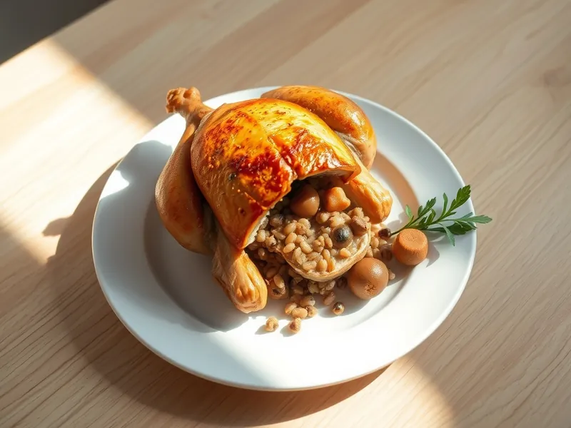

Курица, фаршированная гречкой с грибами
Целая запечённая курица с начинкой из гречки, шампиньонов и лука
150 мин6 порц.527 ккал на порциюБ 37 · Ж 35 · У 19Русская кухня
Открыть в приложении: порции, таймеры, список покупок
Продукты на 6 порц.
- Курица целая1 шт
- Гречка0,75 стак.
- Шампиньоны300 г
- Лук репчатый1 шт
- Сливочное масло30 г
- Сметана 20%2 ст. л.
- Чеснок2 зуб.
- Паприка1 ч. л.
- Соль2 ч. л.
- Перец чёрный молотый2 щеп.
- Вода1,5 стак.
Как готовить
- Промойте гречку, залейте подсоленной кипящей водой и варите на слабом огне 15 минут до полуготовности.
- Обжарьте лук и грибы пластинками на сливочном масле на среднем огне 10 минут, пока жидкость не испарится. Смешайте с гречкой.
- Обсушите курицу, натрите внутри и снаружи солью, перцем, давленым чесноком, паприкой и сметаной.
- Наполните тушку начинкой не слишком плотно, сколите разрез зубочистками и свяжите ножки ниткой.
- Положите курицу в форму спинкой вниз и запекайте при 180 °C (средний жар) 90 минут, поливая выделившимся соком каждые 30 минут. Сок при проколе бедра должен быть прозрачным.
- Дайте курице постоять 10 минут, затем разрежьте на порции и выложите начинку рядом.
Совет. Если кожа темнеет раньше времени, накройте курицу листом фольги на последние 30 минут.